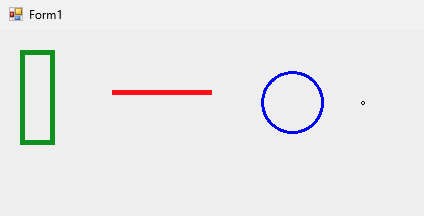

Hi! I'm Andrea Maggiore (ID: 1947898), and this is my personal blog where I will publish my statistics homework and other things.
Statistics is a branch of mathematics and a field of study that involves collecting, analyzing, interpreting, presenting, and organizing data. Its primary purpose is to extract meaningful information and insights from data, which can be used for making informed decisions, drawing conclusions, and understanding patterns or trends in various phenomena.
The statistics contains:
Statistics plays a crucial role in a wide range of fields, including science, business, social sciences, economics, medicine, engineering, and more. It helps researchers, analysts, and decision-makers make sense of data and make informed choices based on evidence rather than intuition or guesswork. Statistical methods are also used to test hypotheses, estimate parameters, and quantify uncertainty in various contexts.
Descriptive statistics and inferential statistics are two branches of statistics used to analyze and summarize data, but they serve different purposes and have distinct characteristics:
Each of these sampling methods has its own strengths and weaknesses, and the choice of method depends on the research objectives, available resources, and the nature of the population being studied. The goal is to select a sample that is both practical and representative to draw valid conclusions.
Experimental designs are structured approaches to conducting scientific experiments to investigate the effects of one or more independent variables on a dependent variable. There are several main types of experimental designs, each with its own characteristics and applications.
In this section, I will show you the code I used to solve the homework.
Link to HTML's page: Link
<!DOCTYPE html>
<html>
<head>
<title>Disegna le figure</title>
<h1>
Homework in JavaScript
</h1>
</head>
<body>
<canvas id="myCanvas" width="2000" height="2000"></canvas>
<script>
var canvas = document.getElementById("myCanvas");
var circle = canvas.getContext("2d");
var line = canvas.getContext("2d");
var rect = canvas.getContext("2d");
var point = canvas.getContext("2d");
// Inizializzo Cerchio
circle.beginPath();
circle.arc(100, 100, 50, 0, 2 * Math.PI);
circle.fillStyle = "red";
circle.fill();
circle.strokeStyle = "black";
circle.lineWidth = 5;
circle.stroke();
circle.closePath();
// Inizializzo Line
line.strokeStyle = "black";
line.lineWidth = 2;
line.beginPath();
line.moveTo(300, 50);
line.lineTo(175, 200);
line.stroke();
// Inizializzo Rettangolo
rect.strokeStyle = "blue";
rect.fillStyle = "red";
rect.lineWidth = 6;
rect.fillRect(50, 300, 90, 50);
rect.strokeRect(50, 300, 90, 50);
// Inizializzo Punto
point.beginPath();
point.arc(250, 325, 5, 0, 2 * Math.PI);
point.fillStyle = "green";
point.fill();
point.strokeStyle = "green";
point.lineWidth = 1;
point.stroke();
point.closePath();
</script>
</body>
</html>
In C#:

using System;
using System.Drawing;
using System.Windows.Forms;
namespace HomeWork1
{
public partial class Form1 : Form
{
public Form1()
{
InitializeComponent();
}
private void panel1_Paint_1(object sender, PaintEventArgs e)
{
Pen rect = new Pen(Color.FromArgb(255, 0, 155, 0), 5);
Pen line = new Pen(Color.Red, 5);
Pen circle = new Pen(Color.Blue, 3);
Pen point = new Pen(Color.Black, 3);
e.Graphics.DrawRectangle(rect, 10, 10, 30, 90);
e.Graphics.DrawLine(line, 100, 50, 200, 50);
e.Graphics.DrawEllipse(circle, 250, 30, 60, 60);
e.Graphics.DrawEllipse(point, 350, 60, 1, 1);
}
}
}